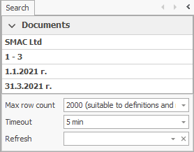
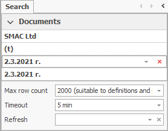
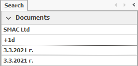
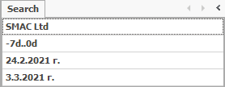
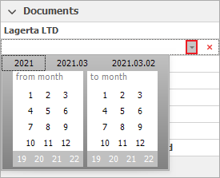
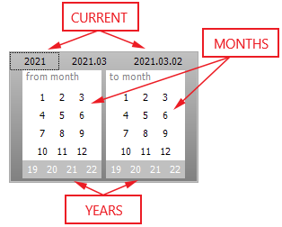
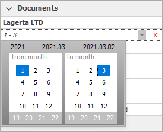
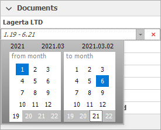

Period expressions
To limit the amount of visible records, you can filter by period, which contains a date in the document (date of the document, due date, delivery date, task completion date). You can find this option in the filtering panel in all of the navigators in the field Period For XXXX. If the field does not show in the standard view, you can enable/show it first.
To elaborate, you can set expressions for days, months and years in the following ways:
- Absolute expressions for periods - set an absolute (fixed, specific) period
- Relative expressions for periods - set a period relative to the current date
- Mixed expressions for periods - they contain an absolute and a relative expression together
- Graphic editor – allows you to choose from a calendar
The period will present itself as Starting date and End date in the fields From XXXX and To XXXX when you set a period in one of these ways.

Absolute expressions
The absolute expressions for periods set the day, the month and eventually the year’s absolute value in an absolute (fixed, specific) expression (for example: 31.01.2021). If you do not set a year, the absolute expression takes the current one. Their general appearance is:
Month
Month.Year
.Year
Day.Month.Year
Examples for specific dates:
If you need to enter 'March', write '3' in the Period field.
If you need to enter 'March, 2021', write '3.21' in the Period field.
If you need to enter 'March 31, 2021', write '31.3.21' in the Period field.
Examples for entire periods:
If you need to enter the period ''from the beginning of January this year to the end of March this year), enter period ''1..3''. If you need to enter the period ''from the beginning of January 2021 to the end of March 2021'', enter period '1.21..3.21''.
Relative expressions
You use the relative expressions to define a date relative to the current date (last week, 4 days ago…). There are two types of relative expressions - predefined and relative.
The predefined expressions consist of service words which directly tell the program what period to take. They are:
today, (t), (d): Today.
(yesterday), (y): Yesterday.
(thisweek), (tw): This week, starting from Monday.
(lastweek), (lw): Last week.
(thismonth), (tm): This month.
(lastmonth), (lm): Last month.
(thisyear), (ty): This year.
(lastyear), (ly): Last year.
(yeartodate), (ytd): The year starting from its beginning until today.
(lastyeartodate), (lytd): The last year starting from its beginning until today.
Keep in mind that there is a difference in interpreting the predefined periods (week, month). When you set them as a Starting date, the system takes the beginning of the period (for example Monday or the first date of the month). When you set them as an end date, the system takes the end of the period (for example Friday, the last date of the month or 31st of December).
Examples:

If you need 'today', enter '(t)'. If today were March 2, 2021, it would translate to 'From March 2, 2021 to March 2, 2021'.
If you need 'yesterday', enter '(y)'. If today were March 2, 2021, it would translate to 'From March 1, 2021 to March 1, 2021'.
If you need 'this week', enter '(tw)'. If today were March 2, 2021 – Tuesday, it would translate to 'From March 1, 2021 (Monday) to March 7, 2021'.
If you need “last week', enter '(lw)'. If today were March 2, 2021, it would translate to 'From February 22, 2021 to February 28, 2021'.
If you need 'this month', enter '(tm)'. If today were January 1, 2021, it would translate to 'From January 1, 2021 to January 31, 2021'.
If you need 'last month', enter '(lm)'. If today were March 2, 2021, it would translate to 'From February 1, 2021 to February 28, 2021'.
If you need 'this year', enter'(ty)'. If today were March 2, 2021, it would translate to 'From January 1, 2021 to December 31, 2021'.
If you need “last year', enter '(ly)'. If today were March 2, 2021, it would translate to 'From January 1, 2020 to December 31, 2020'.
If you need 'year to date', enter '(ytd)'. If today were March 2, 2021, it would translate to 'From January 1, 2021 to March 2, 2021'.
If you need “last year to date', enter '(lytd)' . If today were March 2, 2021, it would translate to 'From January 1, 2020 to March 2, 2020'.
Relative periods - they will set the period as the difference in the number of days (default expression - d), weeks (w), months (m) or years (y) to the current date.
+xd - from date, x days after the current one;
-xd - from date, x days before the current one;
+xw - from date, x weeks after the current one;
-xw - from date, x weeks before the current one;
+xm - from date, x weeks after the current one;
-xm - from date, x weeks before the current one;
+xy - from date, x weeks after the current one;
-xy - from date, x weeks before the current one.
Examples:

If you need the date 'tomorrow', enter '+1d'. If today were March 2, 2021, it would translate to 'From March 3, 2021 to March 3, 2021'.
If you need the date 'yesterday', enter '-1d'. If today were March 2, 2021, it would translate to 'From March 1, 2021 to March 1, 2021.'
If you need the date 'after 8 days', enter '+8d'. If today were March 2, 2021, it would translate to 'From March 10, 2021 to March 10, 2021'.
If you need the date 'before 8 days', enter '-8d'. If today were March 2, 2021, it would translate to 'From February 22, 2021 to February 22, 2021'.
If you need the date 'after 2 weeks', enter '+2w'. If today were March 2, 2021, it would translate to 'From March 22, 2021 to March 28, 2021'.
If you need the date 'before 2 weeks', enter '-2w'. If today were March 2, 2021, it would translate to 'From February 15, 2021 to February 28, 2021'.
If you need the date ”after 3 months', enter '+3m'. If today were March 2, 2021, it would translate to 'From June 1, 2021 to June 30, 2021'.
If you need the date 'before 3 months', enter '-3m'. If today were March 2, 2021, it would translate to 'From December 1, 2020 to December 31, 2020'.
If you need the date 'after 1 year', enter '+1y' If today were March 2, 2021, it would translate to 'From January 1, 2022 to December 31, 2022'.
If you need the date 'before 1 year', enter '-1y'. If today were March 2, 2021, it would translate to 'From January 1, 2020 to December 31, 2020'.
Examples for entire periods:

If you need 'the last 7 days', enter '-7d..0d'. If today were March 2, 2021, it would translate to 'From February 24, 2021 to March 2, 2021'.
If you need “the next 7 days', enter '0d..+7d'. If today were March 2, 2021, it would translate to 'From March 2, 2021 to March 9, 2021'.
If you need 'last week', enter '-1w..-1w'. If today were March 2, 2021, it would translate to 'From February 24, 2021 to March 2, 2021'.
If you need 'this week', enter '0w..0w'. If today were March 2, 2021 (Tuesday), it would translate to 'From March 1, 2021 to March 7, 2021'.
If you need “the last 3 months”, enter “-3m..-1m”. If today were March 2, 2021, it would translate to 'From December 1, 2021 to February 28, 2021'.
If you need “the last 3 months to today”, enter “-3m..0d”. If today were March 2, 2021, it would translate to “From December 1, 2020 to March 2, 2021”.
Mixed expressions
You can use more than absolute, relative and predefined expressions - the mixed expressions. For instance, you can set a starting date as one expression (example: predefined) and set an end date as another expression (example: relative)
Examples:
If you need the date to 'from the beginning of last week to yesterday', enter '(lw)..-1d'. If today were March 2, 2021, it would translate to 'From February 22, 2021 to March 1, 2021'.
If you need the date to 'from the beginning of March to the end of this week', enter '3..(tw)'. If today were March 2, 2021, it would translate to 'From March 1, 2021 to March 7, 2021'.
If you need the date to 'from today to the end of this month', enter '0d..(tm)'. If today were March 2, 2021, it would translate to 'From March 2, 2021 to March 31, 2021'.
Graph editor
You can set periods with the Graph editor for period expressions by setting start and end dates from a friendly calendar. You can access it by clicking the button with the arrow in the field 'Period for XXXX'.

The Graph editor is divided in 2 parts - left and right. The left part allows you to control the starting date and the right one - the end date. The two parts are identical. Each one has buttons for the months and years and above them - the current day, month and year:

When you work with the Graph editor, you can press only one month button. If you haven’t pressed any button, this means that you haven’t selected a starting/ending month and the program takes the current one.
The panel of the years is under the number pad for the months. It shows 4 years - 2 years before the current year, the current year, and one year after the current one. The two panels (left and right) show whether you have included the year at the starting and/or ending month or not.
Example:
If you need the period 'from the beginning of January to the end of March', enter '1' on the left and '3' on the right:

If you need the period 'from the beginning of January 2019 to the end of June 2021', enter '1' and '19' on the left and '6' and '21' on the right:
